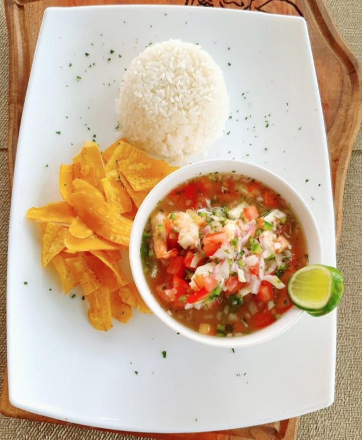

Shrimp Ceviche

This dish is something in between a shrimp cocktail and bisque with an Ecuadorian twist.
Shrimp ceviche AKA ceviche de camaron is a staple in Ecuadorian cuisine. It is quite popular all over Ecuador, especially in the coastal regions.
Ingredients
- 2 lbs. cooked shrimp
- 2 red onions (sliced)
- 4 tomatoes (diced)
- 1 pepper (diced, red or green)
- 14 limes
- 1 bunch cilantro (finely chopped)
- Juice of one orange
- 1/2 cup of ketchup
- Salt, pepper and olive oil
Instructions
- Soak onion slices in salted water for 10 minutes then rinse and drain.
- In a bowl, mix all the ingredients and let sit in the fridge for 2 hours.
- Serve with white rice and/or chifles (green platain chips)
Return to home page